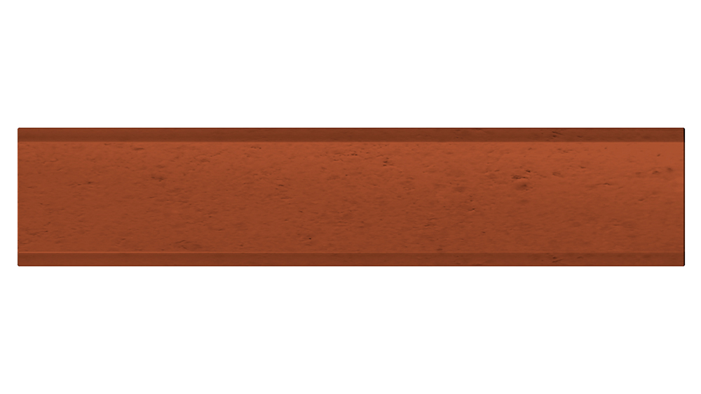
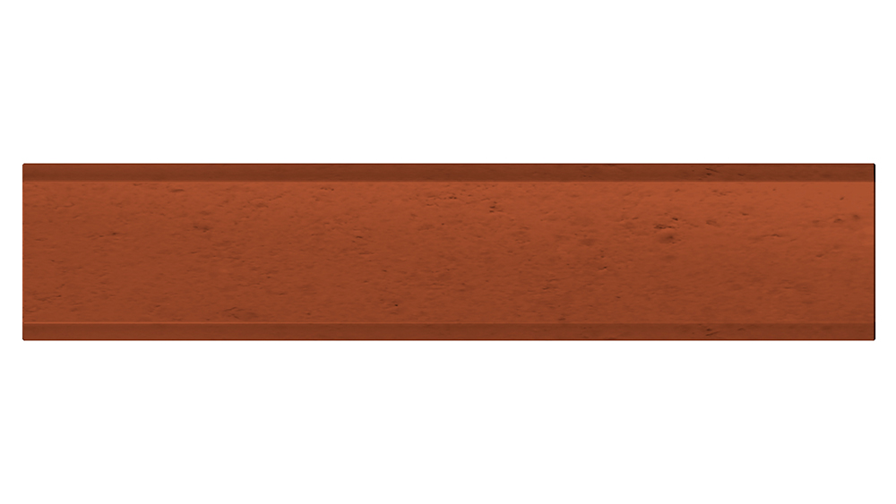

LA FILOSOFIA
CATALYST è una start up innovativa che persegue i principi di architettura sostenibile, con in primo piano il rispetto del territorio ed il consumo del suolo. Privilegia il riciclo di edifici esistenti in disuso e la loro ricostruzione utilizzando i materiali derivanti dalle demolizioni. Applica un innovativo sistema di produzione sul posto dei manufatti necessari alle nuove costruzioni, induce un elevato risparmio energetico, evita le emissioni del CO2 derivato dalle lavorazioni e dai trasporti.
PRODOTTI E SERVIZI
Catalyst fornisce una gamma di prodotti e servizi riassunti nelle tre aree che identificano l’attività aziendale. Che danno tutti origine ad un nuovo sistema di costruzione
Mattoni RI-BLOCK
RI- BLOCK, inteso come RIciclo BLOCK, fornisce lo studio e la realizzazione di nuovi processi e di nuovi prodotti per l’edilizia sostenibile. Complessivamente rappresenta un sistema innovativo che prevede la produzione direttamente in loco dei manufatti necessari alla ricostruzione.
Realizzando sul posto la filiera industriale dei cantieri si ottiene un processo che utilizza i detriti della demolizione comprimendoli in appositi stampi e consente di ottenere un notevole risparmio di laterizi, cementi, malte. (prodotti altamente energivori)

Mattoni CARRARA-BLOCK
Gli stessi metodi di riciclaggio degli inerti sviluppati per il Ri-Block sono stati impiegati per il recupero degli scarti di lavorazione del marmo di Carrara usando anche la polvere derivante dalle escavazioni in corso nelle Cave Apuane che è stata compressa negli appositi stampi. Il risultato è un bellissimo mattone bianco dotato di faccia a vista e utilizzabile anche per motivi architettonici, oltre che per la muratura ordinaria, sia portante che di tamponamento, in luogo dei comuni mattoni in laterizio cotti in fornace. Il tutto col solito notevole risparmio di energia e CO2.
Progetto DOUBLE-BLOCK
Con le stesse miscele brevettate di materiali riciclati, compresse in uno stampo adatto e manovrato da un'apposita macchina, è ricavabile un manufatto di forma particolare provvisto di canali per l'inserimento degli impianti. e dotato di 2 facce a vista perfettamente lisce e finite. Questo manufatto permette di realizzare murature con 2 facce a vista già finite, sia per l'interno che per l'esterno ottenendo un nuovo e più agevole sistema di costruzione.
L’UTILIZZO DI QUESTI PRODOTTI DA ORIGINE AD UN NUOVO SISTEMA DI COSTRUZIONE
Prodotti e progetti Catalyst nascono da un approccio culturale che si identifica con l'edilizia sostenibile, il risparmio energetico e il recupero dei detriti che diversamente sarebbero classificati come rifiuti.
Catalyst Pertanto pone alla base di ogni sua esperienza i principi ecologici e il concetto di sviluppo sostenibile con una visione sistemica del trinomio “funzione-uomo-natura” la più ampia possibile.
Catalyst gestisce progetti volti a garantire “la qualità dell’abitare” in tutte le sue forme evidenziando:
- salvaguardia della salute e del benessere psico-fisico.
- riduzione di ogni tipo di inquinamento, emissioni, rifiuti
- rigenerazione urbana riutilizzabile a fine vita.
Catalyst attribuisce inoltre la massima importanza a tutti gli aspetti che riguardano la qualità della vita nell’interno di un edificio. Utilizza tecniche e soluzioni costruttive particolari in linea con tale principio e privilegia l’impiego di materiali a chilometri zero presenti sul posto e nei territori limitrofi.
I piani di intervento si concretizzano con una visione olistica dei progetti su cui opera un metodo ‘pluridisciplinare’ che porta a valutare tutti gli elementi dell’architettura sostenibile.
Catalyst utilizza un approccio minimalista attento al contenimento del consumo di suolo, all’impiego di materiali derivanti dalle demolizione e allo sfruttamento delle risorse naturali presenti sui territori degli interventi da realizzare.
Usa la massima attenzione ai consumi energetici, all'approccio bioclimatico, alla coibentazione dell’involucro edilizio, alle fonti energetiche rinnovabili, all'efficienza degli impianti.
Utilizza materiali ecologici con la scelta di prodotti naturali valutandone i diversi impatti ambientali prodotti in tutte le fasi del ciclo di lavorazione.
Produce a chilometri zero, selezionando materiali di cui si conosce la provenienza, scegliendo quelli estratti e prodotti nello stesso ambito, includendo il riciclo come principio fondamentale della sostenibilità, riferito sia al singolo manufatto prodotto nel momento, sia all'intero fabbricato che sarà demolito alla fine vita del ciclo di utilizzo.
FASE 1: DEMOLIZIONE
Edificio demolito

Stoccaggio detriti da demolizione

FASE 2: LAVORAZIONE DETRITI
Trituratura detriti

Controlli chimici di salubrità

Miscelazione con elementi leganti
FASE 3: PRODUZIONE
Stabilimento di produzione
Stoccaggio

Pressa ad alta compressione in cantiere

Cantiere
SCHEMA FILIERA DI PRODUZIONE
La filiera di produzione, del nuovo sistema di costruzione, parte con il recupero dei detriti a seguito della demolizione di un edificio, per arrivare alla fase di produzione che può avvenire o presso lo stabilimento o direttamente in cantiere con l’utilizzo di una pressa speciale trasportabile in loco.


 
